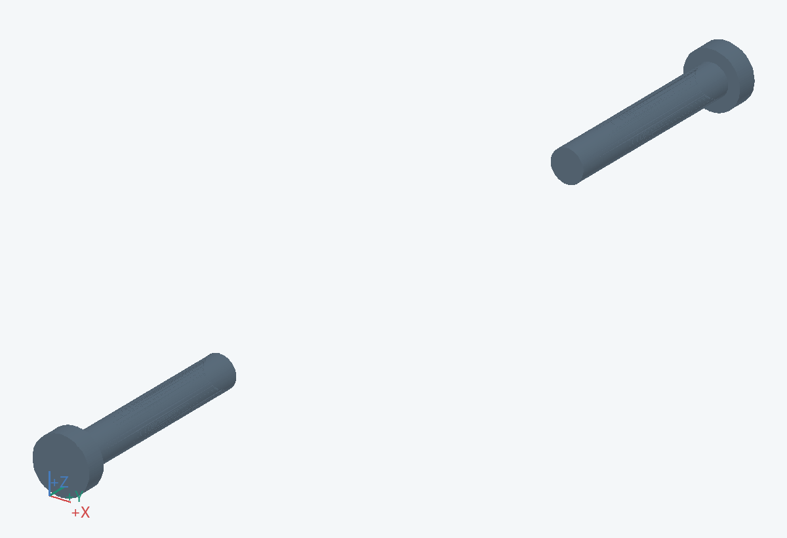
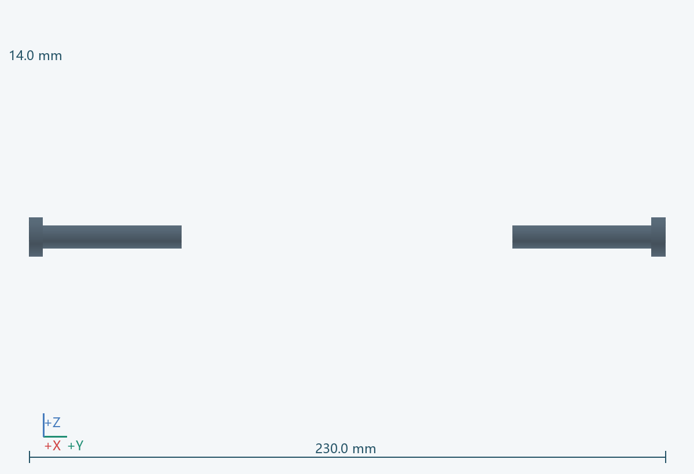
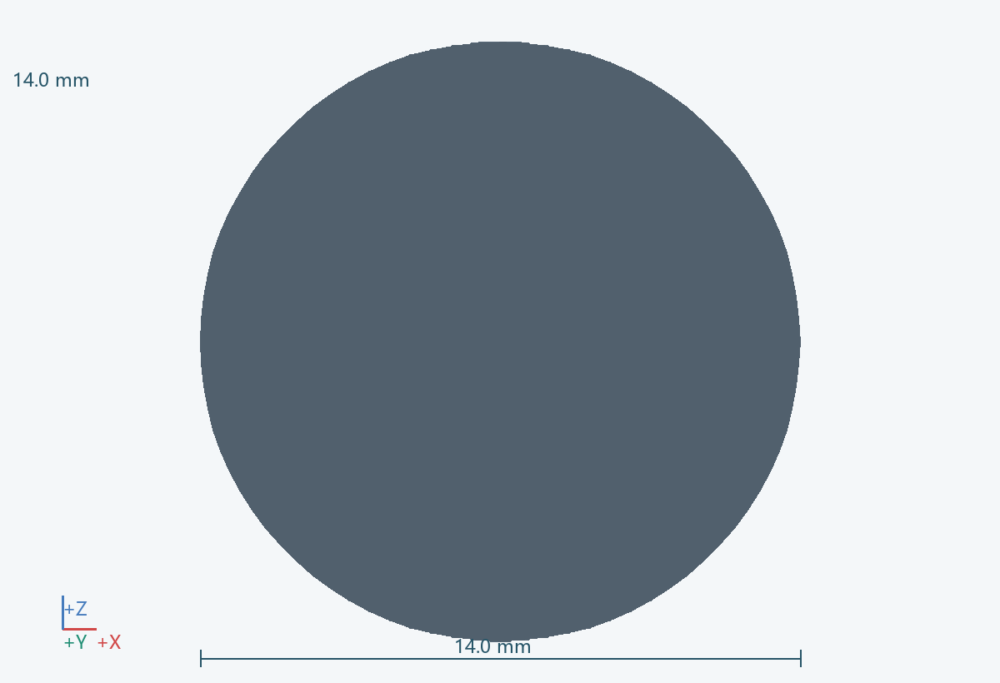

几何包络
14.0 × 230.0 × 14.0 mm（含所示实例）
功能
随高度设置移动，支撑固定球筒与转向机构。
连接 / 基准
上端接 0301 与 0602；通过 0204 定位，0203 承担机械高度锁止。
材料 / 工艺
金属方管；配可更换低摩擦导向块
拆装
机头卸载后沿 +Z 抽出。
待验证
最低与最高位置都要检查线束余量、孔位及滑动间隙。 关联：U07/U09
实例
PRT-0202-R1_PIN__L, PRT-0202-R1_PIN__R